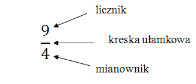
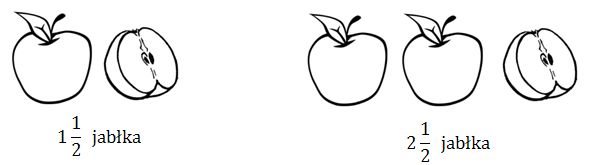
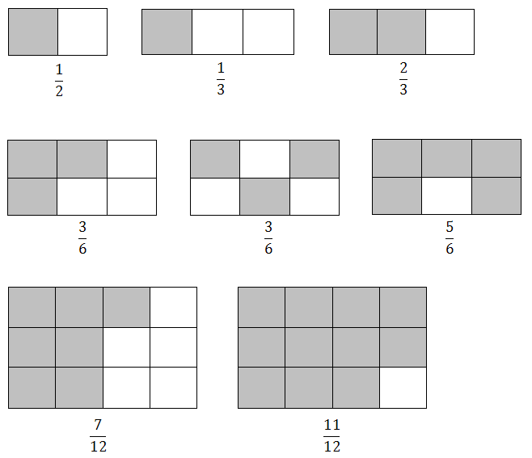
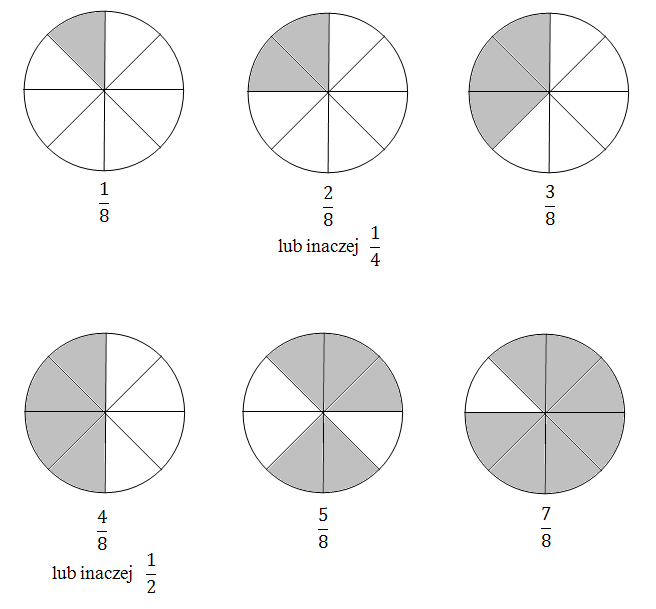
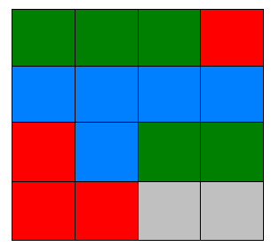

Każdy ułamek zwykły składa się z trzech elementów - licznika, mianownika i kreski
ułamkowej.
Kreska ułamkowa symbolizuje znak dzielenia.

Zatem ułamek \(\frac{9}{4}\) oznacza tę samą liczbę co działanie \(9 : 4\).
Dzięki ułamkom możemy zapisywać liczby, które nie są całkowite.
Liczbę jabłek na dwóch poniższych rysunkach zapiszemy z wykorzystaniem ułamków.

Pod każdym prostokątem zapisano jaka jego część jest koloru szarego. 
Pod każdym kołem zapisano jaka jego część jest koloru szarego. 
Kwadrat podzielono na 16 równych części i każdą pomalowano jakimś kolorem. Określ
jaką część dużego kwadratu pomalowano każdym z kolorów. 
Kolorem zielonym pomalowano \(5\) małych obszarów, czyli \(\frac{5}{16}\) dużego
kwadratu.
Kolorem czerwonym pomalowano \(4\) małe obszary, czyli \(\frac{4}{16}\) dużego
kwadratu.
Równoważnie można powiedzieć, że kolorem czerwonym zamalowano \(\frac{1}{4}\)
powierzchni dużego kwadratu.
Kolorem niebieskim pomalowano \(5\) małych obszarów, czyli \(\frac{5}{16}\)
dużego kwadratu.
Kolorem szarym pomalowano \(2\) małe obszary, czyli \(\frac{2}{16}\) dużego
kwadratu.
Równoważnie można powiedzieć, że kolorem szarym zamalowano \(\frac{1}{8}\)
powierzchni dużego kwadratu.